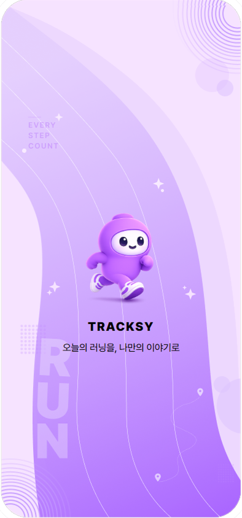
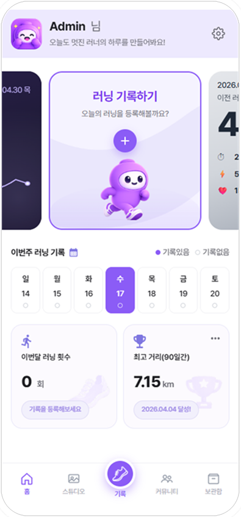
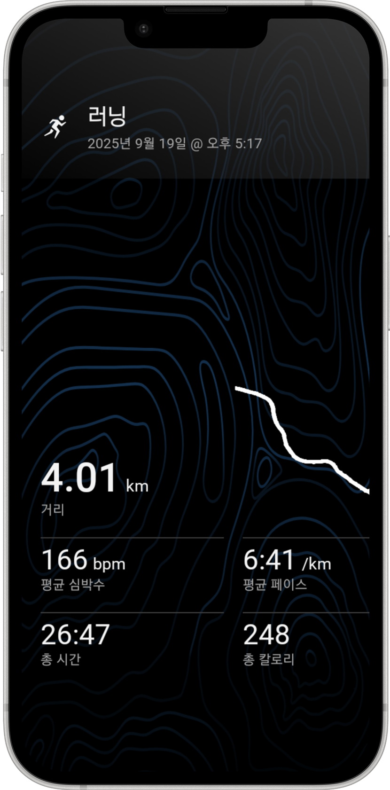

GOAL 01


Project Summary
기록이 아닌 경험을 남기는
기록이 아닌 경험을 남기는
러닝 다이어리 TRACKSY
기존 러닝앱이 담지 못한 감성과 경험에 주목해,
러닝을 나만의 이야기로 남기도록 만든 AI 기반 러닝 다이어리입니다.
60%
기획
프로젝트 리딩 · 아이디어 기획 · 정보 구조 설계
40%
디자인
메인 HOME 화면 UI 디자인 · 전체 프로토타입
30%
퍼블리싱/개발
HTML · CSS · JS 구현
깃허브 브랜치 협업
Problem Definition
러닝 기록은 남지만,
러닝 기록은 남지만,
경험은 남지 않았다.
기존 러닝 앱은 거리, 시간, 페이스 등 수치 중심 정보 제공에 집중되어 있습니다. 하지만 사용자는 단순 기록보다 자신의 성취감과 경험을 공유하고 싶어합니다.
Problem 01
기록 중심 UI
Problem 02
SNS 공유 최적화 부족
Problem 03
감성 표현의 한계

Project Goal
기록을 넘어, 경험이 되는 러닝
GOAL 02
AI 기반 자동 기록 시스템 구축
GOAL 03
러너 간 경험 공유 플랫폼 구축
Key Insights
사용자에게서 발견한 3가지
01
사용자는 운동 기록보다 성취 경험을 공유하고 싶어한다.
02
러닝앱은 많지만 콘텐츠 제작 도구는 부족하다.
03
기록 입력 과정이 길어질수록 서비스 이탈률이 증가한다.
Solution Flow
기록을 콘텐츠로 만드는
기록을 콘텐츠로 만드는
새로운 러닝 경험
1
OCR 자동 기록
2
러닝 카드 제작
3
AI 러닝일지 생성
4
SNS 공유
Key Features
핵심 기능
FEATURE 01
OCR 자동 기록
캡처 이미지에서 거리·시간·페이스를 자동 추출
FEATURE 02
AI 러닝일지
대화를 통해 오늘의 러닝을 한 줄로 기록
FEATURE 03
러닝 카드 스튜디오
SNS 공유를 위한 감성 카드 제작 기능
UX Design
탭으로 나눈 4개의 핵심 화면
Home
오늘의 러닝과 추천 카드를 한눈에. 사용자가 가장 먼저 ‘무엇을 할지’ 알 수 있도록 핵심 액션을 상단에 배치했습니다.
UX Point · 핵심 액션 우선 노출Studio
러닝 카드를 만드는 공간. 템플릿과 감성 요소를 조합해 몇 번의 탭만으로 공유용 콘텐츠를 완성합니다.
UX Point · 최소 단계의 제작 흐름Community
러너들의 카드를 둘러보고 영감을 얻는 공간. 경험을 나누며 동기부여로 이어지도록 설계했습니다.
UX Point · 경험 공유 중심 피드Archive
나의 러닝 기록과 카드를 모아보는 공간. 성장의 흐름을 한눈에 확인할 수 있습니다.
UX Point · 기록의 시각적 누적
Design System
일관된 감성을 위한 시스템
Color
Primary#8B5CF6
Secondary#C4B5FD
Light#F5F3FF
Text#111111
Typography
Pretendard
RegularSemiBoldBlack
Component
Button
Card
HomeStudioCommunity
+
Mascot · TRACKSY Character
Development & Collaboration
디자인을 넘어 개발·협업까지
01
GitHub Branch 협업
02
Claude Code 활용
03
Groq OCR 연동
04
Flutter → Next.js 전환
Collaboration Process
기획 · 리서치
문제 정의와 서비스 방향 합의
디자인 시스템 구축
컬러·컴포넌트·마스코트 정립
개발 · 연동
Next.js 전환, Groq OCR 연동
통합 · 배포
브랜치 규칙 정립 후 안정 배포
Problem Solving
막힌 지점을 해결한 방식
CASE 01
Flutter → Next.js 전환
Before
웹 환경 불안정
After
배포 안정성 향상
CASE 02
Gemini → Groq 전환
Before
429 / 403 오류 발생
After
안정적 OCR 구현
CASE 03
Git Merge 충돌
Before
충돌 발생
After
브랜치 규칙 정립
Project Outcome
프로젝트 성과
3
핵심 기능 설계
4
서비스 영역 구축
AI
AI 기능 적용
4인
팀 프로젝트 진행
기록 관리
콘텐츠 제작
커뮤니티 경험
Retrospective
기록을 관리하는 서비스가 아니라 경험을 기록하는 서비스라는 관점을 배웠고, UX 설계만큼 개발 환경과 협업 구조 설계가 중요하다는 것을 경험했습니다.